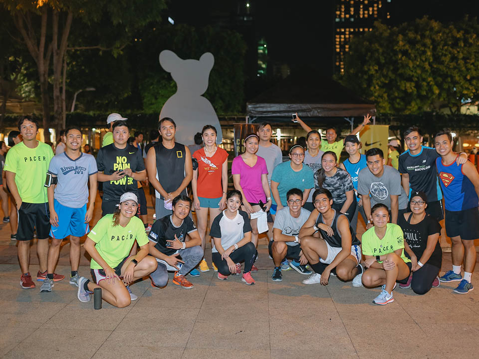

Loyola Run Club is a community built on passionate runners of all backgrounds and abilities. We aspire to share this passion for running with the rest of the Ateneo community through unique events that inspire and educate.
What is Loyola Run Club and what do we do?
Loyola Run Club is a running community that treats everyone as an athlete, regardless of skill level.
We organize unique events that allow participants to discover and develop their passion for running, at the same time doing it for multiple causes.
Through our events, we aim to equip our members with the knowledge, confidence, and coaching they need in order to improve.
Why should people join Loyola Run Club?
In Loyola Run Club we aim to inspire and educate our members on the tenets of running.We believe that everyone is an athlete and should be given the opportunity to both discover and develop their own potential. Our events will seek to not only guide in your personal journey, but also be part of everyone’s journey, as well. We invite you to join our community today!

Vision
Loyola Run Club envisions a network of runners that will embrace and sustain the tenets of athleticism and sportsmanship within the Atenean community.
Mission
As an aspiring running organization of the Ateneo, Loyola Run Club aims to establish a community consisting of driven individuals that value and share a passion for running. It seeks to give members who are new to running the knowledge, confidence, and coaching they need in order to improve.
 Passionately made by User Experience Society
Passionately made by User Experience Society